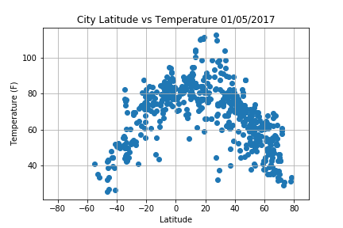

Summary: Latitude vs. X

The purpose of this project is to prove that cities closer to the equator
are hotter than cities near the poles. In order to avoid bias in choosing
cities around the world, I have generated random numbers for latitudes and
longitudes and used CitiPy to find cities that match/closely resemble them.
After collecting all the cities, I used Open Weather Map's API to retrieve
data regarding these cities.
After analyzing 500+ random cities around the world comparing the distance
to the equator with temperature, humidity, cloudiness, and wind speed,
I have concluded that the cities that are closer to the equator tend to have
a higher temperature compared to cities closer to the poles. However, the
peak temperatures are from cities with latitutes around 20 degrees, which is
a little bit above the equator and that can be explained by weather patterns
experienced at the equator.